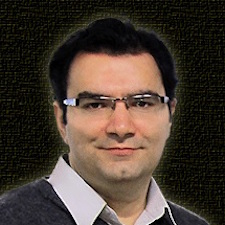

Graphs naturally represent a host of processes, including interactions between people on social or communication networks, links between webpages on the World Wide Web, protein interactions in biological networks, movement in transportation networks, electricity delivery in smart energy grids, relations in bibliographic data, and many others. In such scenarios, graphs that model real-world networks are typically heterogeneous, multi-modal, and multi-relational.
In the era of big data, as more varieties of interconnected structured and semi-structured data are becoming available, the importance of leveraging this heterogeneous and multi-relational nature of networks in being able to effectively mine and learn this kind of data is becoming more evident.
The objective of this workshop is to bring together researchers from a variety of related areas, and discuss commonalities and differences in challenges faced, survey some of the different approaches, and provide a forum to present and learn about some of the most cutting-edge research in this area. As an outcome, we expect participants to walk away with a better sense of the variety of different methods and tools available for heterogenous network mining and analysis, and an appreciation for some of the interesting emerging applications, as well as the challenges that accompany these applications
There are many challenges involved in effectively mining and learning from this kind of data, including:
Understanding the different techniques applicable, including heterogeneous graph mining algorithms, graphical models, latent variable models, matrix factorization methods and more.
Dealing with the heterogeneity of the data.
The common need for information integration and alignment.
Handling dynamic and changing data.
Addressing each of these issues at scale.
Traditionally, a number of subareas have contributed to this space: communities in graph mining, learning from structured data, statistical relational learning, and, moving beyond subdisciplines in computer science, social network analysis, and, more broadly network science.
Schedule
Schedule will be announced soon.
Keynote Speakers
Leman Akoglu
Assistant Professor Carnegie Mellon University
Mining Rich Graphs: Ranking, Classification, and Anomaly Detection
Abstract:
Graph mining is a large research area with various fundamental problems, such as importance ranking, clustering and partitioning, relational classification, link prediction, influence and propagation, etc. When rich data is represented as a graph, in which nodes and/or edges may exhibit different types or properties, how do we think about these fundamental problems? In this talk, I will introduce example work from our group on the ranking, classification, and anomaly mining problems for heterogeneous graphs, motivated by applications from a number of different fields.
Speaker Bio:
Leman Akoglu is an assistant professor of Information Systems at the Heinz College of Carnegie Mellon University. She received her PhD from the Computer Science Department at Carnegie Mellon University in 2012. Her research interests involve algorithmic problems in data mining and applied machine learning, focusing on patterns and anomalies, with applications to fraud and event detection. Dr. Akoglu's research has won 5 publication awards; Best Paper Runner-up at SIAM SDM 2016, Best Paper at SIAM SDM 2015, Best Paper at ADC 2014, Best Paper at PAKDD 2010, and Best Knowledge Discovery Paper at ECML/PKDD 2009. She is also a recipient of the NSF CAREER award (2015) and Army Research Office Young Investigator award (2013).
Nitesh Chawla
Professor University of Notre Dame
TBA
Abstract:
TBA
Speaker Bio:
TBA
Jiawei Han
Professor University of Illinois Urbana-Champaign
Hyper Edge-Based Embedding in Heterogeneous Information Networks
Abstract:
In real-world applications, objects of multiple types are interconnected, forming Heterogeneous Information Networks. In such heterogeneous information networks, we make a key observation that many interactions happen due to some event and the objects in each event form a complete semantic unit. By taking advantage of such a property, we propose a generic framework called Hyper Edge-Based Embedding (HEBE) to learn object embeddings with events in heterogeneous information networks, where a hyperedge encompasses the objects participating in one event. The HEBE framework models the proximity among objects in each event with two methods: (1) predicting a target object given other participating objects in the event, and (2) predicting if the event can be observed given all the participating objects. Since each hyperedge encapsulates more information of a given event, HEBE is robust to data sparseness and noise. In addition, HEBE is scalable when the data size spirals. Extensive experiments on large-scale real-world datasets show the efficacy and robustness of the proposed framework.
Speaker Bio:
Jiawei Han is Abel Bliss Professor in the Department of Computer Science, University of Illinois at Urbana-Champaign. He has been researching into data mining, information network analysis, database systems, and data warehousing, with over 900 journal and conference publications. He has chaired or served on many program committees of international conferences in most data mining and database conferences. He also served as the founding Editor-In-Chief of ACM Transactions on Knowledge Discovery from Data and the Director of Information Network Academic Research Center supported by U.S. Army Research Lab (2009-2016), and is the co-Director of KnowEnG, an NIH funded Center of Excellence in Big Data Computing since 2014. He is Fellow of ACM, Fellow of IEEE, and received 2004 ACM SIGKDD Innovations Award, 2005 IEEE Computer Society Technical Achievement Award, and 2009 M. Wallace McDowell Award from IEEE Computer Society. His co-authored book "Data Mining: Concepts and Techniques" has been adopted as a textbook popularly worldwide.
Kristina Lerman
Associate Professor University of Southern California (ISI)
The Paradoxes of Social Data
Abstract:
Macro and micro views of social data are often incompatible. In this talk, I will discuss two paradoxes arising from this discrepancy and show how they can bias analysis of social data. First, I discuss Simpson’s paradox, which occurs when an association observed in the data at the macro (population) level disappears or even reverses when data is disaggregated on a micro level (into its underlying subgroups). I illustrate with several examples showing how the paradox can distort conclusions of a study, and describe recent algorithmic efforts to address this problem. Second, I discuss the counter-intuitive effects in social network that may significantly distort the observations people make of their friends. These effects include the “strong friendship paradox,” which states that most of your friends have more friends than you do, and its generalizations. As a result of these paradoxes, an opinion that is macroscopically (globally) rare may be dramatically over-represented in the micro (local) neighborhoods of many individuals. This effect, which I call the ``majority illusion,'' leads individuals to systematically overestimate the prevalence of a minority opinion, and may accelerate the spread of social contagions and adoption of social norms.
Speaker Bio:
Kristina Lerman is Research Team Lead at the University of Southern California Information Sciences Institute and holds a joint appointment as a Research Associate Professor in the USC Computer Science Department. Trained as a physicist, she now applies network analysis and machine learning to problems in computational social science, including crowdsourcing, social network and social media analysis. Her recent work on modeling and understanding cognitive biases in social networks has been covered by the Washington Post, Wall Street Journal, and MIT Tech Review.
Julian McAuley
Assistant Professor University of California San Diego
Structured Output Models of Recommendations, Activities, and Behavior
Abstract:
Predictive models of human behavior--and in particular recommender systems--learn patterns from large volumes of historical activity data, in order to make personalized predictions that adapt to the needs, nuances, and preferences of individuals. Models may take incredibly complex data as *input*, ranging from text, images, social networks, or sequence data. However, the *outputs* they are trained to predict--clicks, purchases, transactions, etc.--are typically simple, numerical quantities, in order for the problem to be cast in terms of traditional supervised learning frameworks.
In this talk, we discuss possible extensions to such personalized, predictive models of human behavior so that they are capable of predicting complex structured *outputs*. For example, rather than training a model to predict what content a user might interact with, we could predict how they would react to unseen content, in the form of text they might write. Or, rather than predicting whether a user would purchase an existing product, we could predict the characteristics or attributes of the types of products that *should* be created.
Speaker Bio:
Julian McAuley has been an Assistant Professor in the Computer Science Department at the University of California, San Diego since 2014. Previously he was a postdoctoral scholar at Stanford University after receiving his PhD from the Australian National University in 2011. His research is concerned with developing predictive models of human behavior using large volumes of online activity data.
Jiliang Tang
Assistant Professor Michigan State University
Modeling and Measuring Signed Networks
Abstract:
Network modeling and measuring are two fundamental tasks for social network analysis. The majority of existing efforts have focused on unsigned networks (or networks with only positive links). However, in many real-world social systems, relations between two nodes can be represented as signed networks with positive and negative links, where negative links can denote their foes, distrust, or "unfriended" friends and blocked users. It is evident that the key properties and principles in signed networks are distinct from those of unsigned networks. Hence, dedicated efforts are desired for signed networks. In this talk, we will discuss our recent work on signed generative network models and signed node relevance measurements. Both works suggest great opportunities in this new research subfield.
Speaker Bio:
Jiliang Tang is an assistant professor in the computer science and engineering department at Michigan State University since Fall 2016. Before that, he was a research scientist in Yahoo Research and got his PhD from Arizona State University in 2015. He has broad interests in social computing, data mining and machine learning and is directing the Data Science and Engineering Lab. He was the recipients of the Best Paper Award in KDD2016, the runner up of the Best KDD Dissertation Award in 2015, and the best paper runner up of WSDM2013. He has served as the editors and the organizers in prestigious journals and conferences. He has published his research in highly ranked journals and top conference proceedings, which received thousands of citations and extensive media coverage.
Accepted Papers
Robust Overlapping Community Detection via Constrained Egonet Tensor DecompositionPDF Fatemeh Sheikholeslami and Georgios B. Giannakis
Abstract: The task of community detection over complex networks is of paramount importance in a multitude of applications. The present work puts forward a top-to-bottom community identification approach, termed DC-EgoTen, in which an egonet-tensor (EgoTen) based algorithm is developed in a divide-and-conquer (DC) fashion for breaking the network into smaller subgraphs, out of which the underlying communities progressively emerge. In particular, each step of DC-EgoTen forms a multi-dimensional egonet-based representation of the graph, whose induced structure enables casting the task of overlapping community identification as a constrained PARAFAC decomposition. Thanks to the higher representational capacity of tensors, the novel egonet-based representation improves the quality of detected communities by capturing multi-hop connectivity patterns of the network. In addition, the top-to-bottom approach ensures successive refinement of identified communities, so that the desired resolution is achieved. Synthetic as well as real-world tests corroborate the effectiveness of DC-EgoTen.
(This work has been recently published as a regular paper in IEEE Intl. Conf. on Data Mining (ICDM), New Orleans, LA, 2017.)
Keywords: Overlapping community detection, egonet subgraphs, tensor decomposition, constrained PARAFAC
@inproceedings{heteronam2018Paper5,
title={Robust Overlapping Community Detection via Constrained Egonet Tensor Decomposition},
author={Fatemeh Sheikholeslami and Georgios B. Giannakis},
booktitle={Proceedings of the 1st International Workshop on Heterogeneous Networks Analysis and Mining (HeteroNAM)},
year={2018}
}
SMACD: Semi-supervised Multi-Aspect Community DetectionPDF Ekta Gujral and Evangelos Papalexakis
Abstract: Community detection in real-world graphs has been shown to benefit from using multi-aspect information, e.g., in the form of “means of communication” between nodes in the network. An orthogonal line of work, broadly construed as semi-supervised learning, approaches the problem by introducing a small percentage of node assignments to communities and propagates that knowledge throughout the graph. In this paper, we introduce SMACD, a novel semi-supervised multi-aspect community detection. To the best of our knowledge, SMACD is the first approach to incorporate multi-aspect graph information and semi-supervision, while being able to discover communities.We extensively evaluate SMACD’s performance in comparison to state-of-the-art approaches across six real and two synthetic datasets and demonstrate that SMACD, through combining semi-supervision and multi-aspect edge information, outperforms the baselines.
@inproceedings{heteronam2018Paper1,
title={SMACD: Semi-supervised Multi-Aspect Community Detection},
author={Ekta Gujral and Evangelos Papalexakis},
booktitle={Proceedings of the 1st International Workshop on Heterogeneous Networks Analysis and Mining (HeteroNAM)},
year={2018}
}
From homogeneous to heterogeneous network alignmentPDF Shawn Gu, John Johnson, Fazle Faisal and Tijana Milenkovic
Abstract: Network alignment (NA) aims to find a node mapping between the compared networks that uncovers regions of high similarity. Existing NA methods are homogeneous; that is, they deal with networks containing nodes and edges of one type. These methods compute node similarities and find high scoring alignments with respect to these similarities, while simultaneously maximizing the number of conserved edges. However, due to the increasing amount of network data with nodes and edges of different types, we generalize three recent state-of-the-art homogeneous NA methods, WAVE, MAGNA++, and SANA, to enable heterogeneous NA for the first time. We introduce two novelties to do this. First, we generalize homogeneous graphlets, which have been proven as a measure of node similarity, to their heterogeneous counterparts. Second, we generalize $S^3$, a homogeneous measure of edge conservation that has been proven in homogeneous NA, to its heterogeneous counterpart. In evaluations on synthetic networks and real-world biological data, using these optimizations for heterogeneous NA lead to better alignments and better robustness to noise in the data than their homogeneous counterparts.
@inproceedings{heteronam2018Paper4,
title={From homogeneous to heterogeneous network alignment},
author={Shawn Gu, John Johnson, Fazle Faisal and Tijana Milenkovic},
booktitle={Proceedings of the 1st International Workshop on Heterogeneous Networks Analysis and Mining (HeteroNAM)},
year={2018}
}
Discovering Hidden Structure in High Dimensional Human Behavioral Data via Tensor FactorizationPDF Homa Hosseinmardi, Hsien-Te Kao, Kristina Lerman and Emilio Ferrara
Abstract: In recent years, the rapid growth in technology has increased the opportunity for longitudinal human behavioral studies. Rich multimodal data, from wearables like Fitbit, online social networks, mobile phones etc. can be collected in natural environments. Uncovering the underlying low-dimensional structure of noisy multi-dimensional data in an unsupervised setting is a challenging problem. Tensor factorization has been successful in extracting the interconnected low dimensional descriptions of multi-dimensional data. In this paper, we apply non-negative tensor factorization on a real-word wearable sensor data, StudentLife, to find latent temporal factors and group of individuals. Meta data is available for the semester schedule, as well as the individuals' performance and personality. We demonstrate that non-negative tensor factorization can successfully discover clusters of individuals who exhibit higher academic performance, as well as those who frequently engage in leisure activities. The recovered latent temporal patterns associated with these groups are validated against ground truth data to demonstrate the accuracy of our framework.
Keywords: Tensor Factorization, Human Behavior, Wearable Sensors
@inproceedings{heteronam2018Paper9,
title={Discovering Hidden Structure in High Dimensional Human Behavioral Data via Tensor Factorization},
author={Homa Hosseinmardi, Hsien-Te Kao, Kristina Lerman and Emilio Ferrara},
booktitle={Proceedings of the 1st International Workshop on Heterogeneous Networks Analysis and Mining (HeteroNAM)},
year={2018}
}
Multifaceted Event Analysis on Cross-Media Network DataPDF Daheng Wang, Meng Jiang, Xueying Wang, Nitesh Chawla and Paul Brunts
Abstract: Events such as shootings, protests, flight crashes and new public policies are broadcasted across news media and social media in our society. Different media sources cover different facets of the events. In this work, we extend the idea of heterogeneous information network to formulate and study "cross-media information network''. We propose a multifaceted analysis framework that models four critical facets to fully understand the events across social media network and news media network. The facets include media type for differentiating event information sources; content for discovering events from unstructured text; sentiment for quantifying user reflection on events; and, time for turning events into dynamic evolving objects. We evaluate our framework on a real-world cross-media network based on Twitter and Google News. Experiments demonstrate our framework can generate interesting and useful event description and visualization for human inspection.
@inproceedings{heteronam2018Paper8,
title={Multifaceted Event Analysis on Cross-Media Network Data},
author={Daheng Wang, Meng Jiang, Xueying Wang, Nitesh Chawla and Paul Brunts},
booktitle={Proceedings of the 1st International Workshop on Heterogeneous Networks Analysis and Mining (HeteroNAM)},
year={2018}
}
Enhancing spatial query results using semantics and multiplex networksPDF Manesh Pillai and George Karabatis
Abstract: Geographic information retrieval (GIR) research mainly focuses on finding relevant geographic artifacts along one layer, although answers to queries should preferably include artifacts across multiple layers. This paper addresses this limitation, by exploiting relationships that exist between geographical objects of the same or different types. Given the existence of these relationships we can infer additional indirect semantic relationships between geographical objects that otherwise would be ignored. This semantic information contains multiple dimensions. This research creates a mathematical model of semantically relevant geographic objects that belong to different layers using the construct of multiplex networks. The proposed model respects and extends the “layered” structure of geographic data, and enhances the results of queries made to a GIS. A prototype system has been implemented over an existing GIS relational database. Experiments with the prototype show significant improvements in the results of queries, measured using precision and recall.
Keywords: Geographic Information Retreival (GIR), Geographic Information Systems (GIS), Multiplex Networks, Semantic Link Networks
@inproceedings{heteronam2018Paper2,
title={Enhancing spatial query results using semantics and multiplex networks},
author={Manesh Pillai and George Karabatis},
booktitle={Proceedings of the 1st International Workshop on Heterogeneous Networks Analysis and Mining (HeteroNAM)},
year={2018}
}
Biological Systems as Heterogeneous Information Networks: A Mini-review and PerspectivesPDF Koki Tsuyuzaki and Itoshi Nikaido
Abstract: In the real world, most objects and data have multiple types of attributes and inter-connections. Such data structures are named “Heterogeneous Information Networks” (HIN) and have been widely researched. Biological systems are also considered to be highly complicated HIN. In this work, we review various applications of HIN methods to biological and chemical data, discuss some advanced topics, and describe some future research directions.
Keywords: Heterogeneous Information Network, Omics Data Analysis, Random Walk, Meta-path, Network Embedding
@inproceedings{heteronam2018Paper3,
title={Biological Systems as Heterogeneous Information Networks: A Mini-review and Perspectives},
author={Koki Tsuyuzaki and Itoshi Nikaido},
booktitle={Proceedings of the 1st International Workshop on Heterogeneous Networks Analysis and Mining (HeteroNAM)},
year={2018}
}
StackSeq2Seq: Dual Encoder Seq2Seq Recurrent NetworksPDF Alessandro Bay and Biswa Sengupta
Abstract: A widely studied non-deterministic polynomial time (NP) hard problem lies in finding a route between the two nodes of a graph. Often meta-heuristics algorithms such as $A^{*}$ are employed on graphs with a large number of nodes. Here, we propose a deep recurrent neural network architecture based on the Sequence-2-Sequence (Seq2Seq) model, widely used, for instance in text translation. Particularly, we illustrate that utilising a context vector that has been learned from two different recurrent networks enables increased accuracies in learning the shortest route of a graph. Additionally, we show that one can boost the performance of the Seq2Seq network by smoothing the loss function using a homotopy continuation of the decoder's loss function.
@inproceedings{heteronam2018Paper6,
title={StackSeq2Seq: Dual Encoder Seq2Seq Recurrent Networks},
author={Alessandro Bay and Biswa Sengupta},
booktitle={Proceedings of the 1st International Workshop on Heterogeneous Networks Analysis and Mining (HeteroNAM)},
year={2018}
}
Highly Accurate Link Prediction in Networks Using Stacked GeneralizationPDF Amir Ghasemian, Aram Galstyan and Aaron Clauset
Abstract: Link prediction is an important task in complex networks which has a wide variety of applications in recommendation systems. Although many community detection methods can be used in this end, the recently proved No Free Lunch theorem for community detection implies that each makes some kind of trade-off, and no algorithm can be optimal on all inputs. Different algorithms will thus over- or under-fit on different inputs, finding more, fewer, or just different communities than is optimal. Therefore, algorithms vary widely in how many communities they find in a given input, and these differences induce wide variation in accuracy on link prediction task. On the other hand, stacked generalization approach helps to design a high-level classification model via combining the lower-level models. The goal is to have better predictive performance by learning and fusing the best performance of each link prediction algorithm in different feature configurations. In this paper, we present a novel ensemble approach on link prediction using stacked generalization and show that via this approach we can achieve a higher precision and recall compared to each algorithm and to the best-overall-predictors. We present our results on 11 edge prediction algorithms on a novel and diverse corpus of 406 diverse real-world networks.
Keywords: Link Prediction, Stacked Generalization, Complex Networks
@inproceedings{heteronam2018Paper10,
title={Highly Accurate Link Prediction in Networks Using Stacked Generalization},
author={Amir Ghasemian, Aram Galstyan and Aaron Clauset},
booktitle={Proceedings of the 1st International Workshop on Heterogeneous Networks Analysis and Mining (HeteroNAM)},
year={2018}
}
Call for Papers
This workshop is a forum for exchanging ideas and methods for heterogeneous networks analysis and mining, developing new common understandings of the problems at hand, sharing of data sets where applicable, and leveraging existing knowledge from different disciplines. The goal is to bring together researchers from academia, industry, and government, to create a forum for discussing recent advances in this area. In doing so, we aim to better understand the overarching principles and the limitations of our current methods and to inspire research on new algorithms and techniques for heterogeneous networks analysis and mining.
To reflect the broad scope of work on heterogeneous networks analysis and mining, we encourage submissions that span the spectrum from theoretical analysis to algorithms and implementation, to applications and empirical studies is various domains. The need for analysis and learning methods that go beyond mining simple graphs is emerging in many disciplines and are referred to with different names depending on the type of data augmenting the simple graph.
Topics of interest include, but are not limited to:
Heterogeneous Information Networks
Multi-Relational Networks
Signed Networks
Attributed Networks
Aligned Networks
Multigraphs
Multidimensional Networks
Multilayer Networks
Complex Networks
Multimodal Networks
Heterogenous networks are becoming the key component in many emerging applications and data-mining and graph-mining related tasks. Some of the related research areas and tasks related to heterogeneous networks include:
Link and relationship strength prediction
Clustering and community detection and formation modeling
Learning to rank in information networks
Similarity measures and relationship extraction
Applications to modeling of weblogs, social media, social networks, medical networks, and the semantic web
Statistical relational learning
Tensor factorization
Network-based classification
Hybrid recommender systems
Information fusion
Network evolution and dynamic networks
All papers will be peer reviewed, single-blinded.
We welcome many kinds of papers, such as, but not limited to:
Novel research papers
Demo papers
Work-in-progress papers
Visionary papers (white papers)
Appraisal papers of existing methods and tools (e.g., lessons learned)
Relevant work that has been previously published
Work that will be presented at the main conference of WSDM
Authors should clearly indicate in their abstracts the kinds of submissions that the papers belong to, to help reviewers better understand their contributions.
Submissions must be in PDF, no more than 8 pages long — shorter papers are welcome — and formatted according to the standard double-column ACM Proceedings Style.
The accepted papers will be published on the workshop’s website and will not be considered archival for resubmission purposes.
Authors whose papers are accepted to the workshop will have the opportunity to participate in a spotlight and poster session, and some set may also be chosen for oral presentation.
For paper submission, please proceed to the submission website.
Please send enquiries to chair@heteronam.org
To receive updates about the current and future workshops and the other related news, please join the Mailing List, or follow the Twitter Account.
Important Dates
Paper Submission Open: Sep 1, 2017
Paper Submission Deadline: Nov 23, 2017
Author Notification: Dec 20, 2017
Camera Ready: Jan 20, 2018
Workshop: Feb 9, 2018
Workshop Organizers

Shobeir Fakhraei
Research Scientist University of Southern California (ISI)
Yanen Li
Research Scientist Snap Inc.
Yizhou Sun
Assistant Professor University of California Los angeles
Tim Weninger
Assistant Professor University of Notre Dame
Program Committee
Nesreen Ahmed (Intel Research Labs)
Yuxiao Dong (Microsoft Research)
Amir Ghasemian (University of Colorado Boulder)
Srijan Kumar (Stanford University)
Julian McAuley (University of California, San Diego)
Fred Morstatter (University of Southern California)
Maximilian Nickel (Facebook AI Research)
Evangelos Papalexakis (University of California Riverside)
Ali Pinar (Sandia National Laboratories)
Arti Ramesh (Binghamton University)
Neil Shah (Carnegie Mellon University)
Chuan Shi (Beijing Uni. of Posts & Telecommunications)
Jiliang Tang (Michigan State University)
Elena Zheleva (University of Illinois at Chicago)